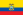

Despre WSOP
World Series of Poker reprezintă o serie de turnee de poker care se desfășoară anual în Las Vegas iar din anul 2005 sunt sponsorizate de Caesars Entertainment Corporation .Câștigătorul fiecărui eveniment primește o brățară World Series of Poker și un premiu monetar bazat pe numărul de participanți și sumele buy-in. De-a lungul anilor, turneul a crescut atât în numărul de evenimente, cât și în numărul de participanți. În fiecare an, WSOP culminează cu Evenimentul Principal $ 10,000 no-limit hold'em, care, din 2004, a atras participanți care numără cateva mii. Câștigătorul primește un premiu în numerar în valoare de mai multe milioane de dolari și o brățară, care a devenit cea mai râvnită distincție pe care o poate câștiga un jucător de poker . Câștigătorul evenimentului principal World Series of Poker este considerat a fi Campionul Mondial de Poker.
Începând cu anul 2017, WSOP este format din 74 de evenimente, cu cele mai importante variante de poker. Cu toate acestea, în ultimii ani, mai mult de jumătate din evenimente au fost variante de Texas Hold 'em. Evenimentele au loc în mod tradițional într-o zi sau de-a lungul a câteva zile consecutive în timpul seriei din iunie și iulie. Incepând cu anul 2008, masa finală a evenimentului principal a fost amânată până în noiembrie.
Origini

Johnny Moss, Becky Binion, si Puggy Pearson la World Series of Poker 1974
Ideea de World Series of Poker a început în 1969 cu un eveniment numit reunirea Texas Gambling. A fost un eveniment sponsorizat de Tom Moore din San Antonio, Texas, și a avut loc la Holiday Hotel and Casino din Reno. Acest eveniment inaugural a fost câștigat de Crandell Addington.Setul de turnee în care World Series of Poker va evolua a pornit de la proprietarul de cazino și jucătorul de poker Benny Binion. În 1970, primul WSOP de la Horseshoe a lui Binion a avut loc ca o serie de jocuri de cash printre care se numărau Razz,seven-card stud și Texas hold 'em. Formatul pentru Main Event a venit anul următor. Câștigătorul din 1970, Johnny Moss, a fost ales de colegii săi ca primul Campion Mondial al pokerului și a primit ca premiu o cupă de argint.
Brățări

Brățara de aur oferită în 2005
Brățara World Series of Poker (WSOP) este considerată cel mai râvnit premiu nemonetar pe care un jucător de poker îl poate câștiga. Din 1976, o brățară a fost acordată câștigătorului fiecărui eveniment la WSOP. Chiar dacă victoria a avut loc înainte de 1976, campionatele WSOP sunt acum considerate brățări. În primii ani ai WSOP, au fost acordate doar o mână de brățări în fiecare an. În 1990, au avut loc doar 14 evenimente care implicau brățară. Până în anul 2000, numărul a crescut la 24. Pe măsură ce popularitatea pokerului a crescut în anii 2000, numărul evenimentelor a crescut în mod similar. În 2011, la WSOP au fost acordate 58 de brățări, 7 la World Series of Poker Europe (WSOPE) și una la WSOP National Circuit Champion. Acest lucru a adus numărul total de brățări acordate la 959.
La început, brățările nu aveau prea mult prestigiu. Câștigător a zece brățări, Doyle Brunson, a spus că prima sa brățară nu înseamnă nimic pentru el și nici măcar nu a ridicat două dintre ele. Unii jucători profesioniști de poker cred că există două tipuri de jucători de poker; cei care au câștigat o brățară și cei care nu au câștigat vreuna. Cei care au câștigat aparțin unui club exclusivist.

Brățara World Series of Poker Championship 2006 fabricată din aur,dimanate ,rubine și safire
Câștigător :Jamie Gold
| Număr brățări | Jucător |
|---|---|
| 14 | Phil Hellmuth |
| 10 | Doyle Brunson |
| 10 | Johnny Chan |
| 10 | Phil Ivey |
| 9 | Johnny Moss |
| 8 | Erik Seidel |
Main Event

Rio All Suite Hotel and Casino
Începând cu anul 1972, evenimentul principal al WSOP a fost turneul Texas Hold'Em cu buy-in de $ 10.000 fără limită. Câștigătorul evenimentului principal WSOP primește o brățară World Series of Poker, milioane de dolari (cu suma exactă pe baza numărului de participanți) și dreptul de a fi considerat campion mondial al pokerului. Începând cu 2008, cei nouă jucători care au ajuns la masa finală a evenimentului principal sunt numiți November Nine, o referință la faptul că masa finală are loc în luna noiembrie, la cateva luni după finalizarea rundelor preliminare ale evenimentului principal. Până în 2005, WSOP a avut loc la cazinoul Binion's Horseshoe. În 2005, evenimentul s-a mutat la Rio All Suite Hotel și Casino. Toate evenimentele principale care au urmat evenimentului din 2005 au fost jucate complet la Rio. În consecință, acest lucru l-a făcut pe Joe Hachem ultimul jucător care să câștige Evenimentul Principal la casa inițială a World Series of Poker.
Mai jos este prezentat un tabel conținând câștigătorii WSOP Main Event.Tabelul nu conține prima ediție,cea din 1970 întrucât atunci nu a existat o ultimă mână propriu-zisă,câștigătorul fiind votat de ceilalți concurenți.
Anul  |
Câștigător | Mâna câștigătoare |
Premiu locul intâi ($) |
Participanți |
Locul doi | Mâna pierzătoare |
|---|---|---|---|---|---|---|
| 1971 |  Johnny Moss Johnny Moss |
- | 30000 | 6 | Walter Pearson |
- |
| 1972 | Thomas Preston |
K♥ J♦ | 80000 | 8 | Walter Pearson |
- |
| 1973 | Walter Pearson |
A♠ 7♠ | 130000 | 13 | Johnny Moss |
K♥ J♠ |
| 1974 | Johnny Moss |
3♥ 3♠ | 160000 | 16 | Crandell Addington |
A♣ 2♣ |
| 1975 | Brian Roberts |
J♠ J♥ | 210000 | 21 | Bob Hooks |
J♣ 9♣ |
| 1976 | Doyle Brunson |
10♠ 2♠ | 220000 | 22 | Jesse Alto |
A♠ J♥ |
| 1977 | Doyle Brunson |
10♠ 2♥ | 340000 | 34 | Gary Berland |
8♥ 5♣ |
| 1978 | Bobby Baldwin |
Q♦ Q♣ | 210000 | 42 | Crandell Addington |
9♦ 9♣ |
| 1979 | Hal Fowler |
7♠ 6♦ | 270000 | 54 | Bobby Hoff |
A♣ A♥ |
| 1980 | Stu Ungar |
5♠ 4♠ | 385000 | 73 | Doyle Brunson |
A♥ 7♠ |
| 1981 | Stu Ungar |
A♥ Q♥ | 375000 | 75 | Perry Green |
10♣ 9♠ |
| 1982 | Jack Straus |
A♥ 10♠ | 520000 | 104 | Dewey Tomko |
A♦ 4♦ |
| 1983 | Tom McEvoy |
Q♦ Q♠ | 540000 | 108 | Rod Peate |
K♦ J♦ |
| 1984 | Jack Keller |
10♥ 10♠ | 660000 | 132 | Byron Wolford |
6♥ 4♥ |
| 1985 | Bill Smith |
3♠ 3♥ | 700000 | 140 | T. J. Cloutier |
A♦ 3♣ |
| 1986 | Berry Johnston |
A♠ 10♥ | 570000 | 141 | Mike Harthcock |
A♦ 8♦ |
| 1987 | Johnny Chan |
A♠ 9♣ | 625000 | 152 | Frank Hendersonk |
4♦ 4♣ |
| 1988 | Johnny Chan |
J♣ 9♣ | 700000 | 167 | Erik Seidel |
Q♣ 7♥ |
| 1989 | Phil Hellmuth, Jr. |
9♠ 9♣ | 755000 | 178 | Johnny Chan |
A♠ 7♠ |
| 1990 |  Mansour Matloubi Mansour Matloubi |
6♥ 6♠ | 895000 | 194 | Hans Lund |
4♠ 4♣ |
| 1991 | Brad Daugherty |
K♠ J♠ | 1000000 | 215 | Don Holt |
7♥ 3♥ |
| 1992 | Hamid Dastmalchi |
8♥ 4♣ | 1000000 | 201 | Tom Jacobs |
J♦ 7♠ |
| 1993 | Jim Bechtel |
J♠ 6♠ | 1000000 | 220 | Glenn Cozen |
7♦ 4♥ |
| 1994 | Russ Hamilton |
K♠ 8♥ | 1000000 | 268 | Hugh Vincent |
8♣ 5♥ |
| 1995 | Dan Harrington |
9♦ 8♦ | 1000000 | 273 |  Howard Goldfarb Howard Goldfarb |
A♥ 7♣ |
| 1996 | Huck Seed |
9♦ 8♦ | 1000000 | 295 | Bruce Van Horn |
K♣ 8♣ |
| 1997 | Stu Ungar |
A♥ 4♣ | 1000000 | 312 | John Strzemp |
A♠ 4♣ |
| 1998 | Scotty Nguyen |
J♦ 9♣ | 1000000 | 350 | Kevin McBride |
Q♥ 10♥ |
| 1999 |  Noel Furlongn Noel Furlongn |
5♣ 5♦ | 1000000 | 393 | Alan Goehring |
6♥ 6♣ |
| 2000 | Chris Fergusonn |
A♠ 9♣ | 1500000 | 512 | T. J. Cloutier |
A♦ Q♣ |
| 2001 |  Juan Mortensen | K♣ Q♣ | 1500000 | 613 | Dewey Tomko |
A♠ A♥ |
| 2002 | Robert Varkonyi |
Q♦ 10♠ | 2000000 | 631 |  Julian Gardner Julian Gardner |
J♣ 8♣ |
| 2003 | Chris Moneymaker |
5♦ 4♠ | 2500000 | 839 |  Sam Farha Sam Farha |
J♥ 10♦ |
| 2004 | Greg Raymer |
8♠ 8♦ | 5000000 | 2576 | David Williams |
A♥ 4♠ |
| 2005 |  Joe Hachem Joe Hachem |
7♣ 3♠ | 7500000 | 5619 | Steve Dannenmann |
A♦ 3♣ |
| 2006 | Jamie Gold |
Q♠ 9♣ | 12000000 | 8773 | Paul Wasicka |
10♥ 10♠ |
| 2007 | Jerry Yang |
8♦ 8♣ | 8250000 | 6358 | Tuan Lam |
A♦ Q♦ |
| 2008 |  Peter Eastgate Peter Eastgate |
A♦ 5♠ | 9152416 | 6844 |  Ivan Demidov Ivan Demidov |
4♠ 2♠ |
| 2009 | Joe Cada |
9♦ 9♣ | 8547042 | 6494 | Darvin Moon |
Q♦ J♦ |
| 2010 | Jonathan Duhamel |
A♠ J♥ | 8944310 | 7319 | John Racener |
K♦ 8♦ |
| 2011 |  Pius Heinz Pius Heinz |
A♠ K♣ | 8715638 | 6865 |  Martin Staszkor Martin Staszkor |
10♣ 7♣ |
| 2012 | Greg Merson |
K♦ 5♦ | 8531853 | 6598 | Jesse Sylvia |
Q♠ J♠ |
| 2013 | Ryan Riess |
A♥ K♥ | 8361570 | 6352 | Jay Farber |
Q♠ 5♠ |
| 2014 |  Martin Jacobson Martin Jacobson |
10♥ 10♦ | 10000000 | 6683 |  Felix Stephensen Felix Stephensen |
A♥ 9♥ |
| 2015 | Joe McKeehen |
A♥ 10♦ | 7683346 | 6420 | Joshua Beckley |
4♣ 4♦ |
| 2016 | Qui Nguyen |
K♣ 10♣ | 8005310 | 6737 | Gordon Vayo |
J♠ 10♠ |
| 2017 | Scott Blumstein |
A♥ 2♦ | 8150000 | 7221 | Dan Ott |
A♦ 8♦ |